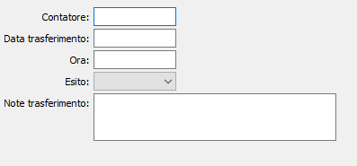

Storia trasferimenti
La tabella, che non è modificabile riporta le informazioni relative ad ogni trasferimento effettuato.

Vengono visualizzati, per ogni trasferimento, il contatore, la data, l'ora, l'esito OK oppure Errato ed eventuali annotazioni.